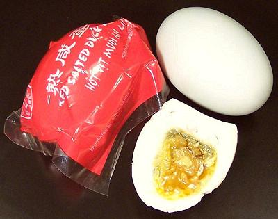

Salted Eggs

[not vit muoi (Viet); itlog na maalat (Filipino)]
These can be either duck eggs or chicken eggs with duck eggs preferred
(less breakage, richer flavor). They are made by a similar method as
Preserved Duck Eggs, but coated
with salt, mixed with clay or charcoal rather than alkali. They may also
be made by soaking in a saturated salt brine. The photo shows a
Philippine salted duck egg wrapped in red plastic, a Philippine salted
duck egg cut in half, and at the top, a California salted duck egg,
quite a bit larger than Asian imports.
More on Eggs.
Buying:
Salted eggs are very popular in China, the
Philippines, Vietnam, and Thailand, so can be found in markets serving
those ethnic communities. Commercial salted duck eggs from the
Philippines are often dyed red or wrapped in red plastic, while salted
chicken eggs (not much seen here in California) may be dyed blue or
green.
Caution:
When buying Duck Eggs, be careful. California
Fresh, Raw Salted, and Cooked Salted, duck eggs look exactly the same.
Check the sign and the label so you get the kind you want.
California Balut also look
exactly the same, and you probably don't want those, but the high
price is a tip-off.
Cooked Salted Eggs:
Imported salted eggs are already
cooked, much easier to ship that way. California salted duck eggs are
also most often cooked, but raw are available. Cooked Salted Eggs are
practically impossible to shell neatly, but this doesn't matter, they
are always chopped for recipes, Many recipes use only the rich oily
yolk and the almost flavorless whites are often discarded. Integrity
and color of the yolk depends on the exact salting process, but they
should be quite dark.
Raw Salted Eggs:
These are produced in California for
recipes requiring them, for which cooked salted eggs are entirely
unsuitable. The Yolk is yellow and stiff, while the white is almost
clear and completely liquid. The yolk may be broken into small pieces,
and the egg stirred into soups, as as is done with regular eggs for
Egg Flower Soup.
Cooking:
To cook raw salted eggs, put them in water to
cover and bring to a boil. Once the water is boiling turn down the
heat and simmer for about 20 minutes, 15 for Chicken eggs. These eggs
are often impossible to peel neatly, but that's not really a problem
since they're generally chopped up as a flavoring ingredient and the
yolks are often crushed as a topping for rice.
Making Salted Eggs:
Duck eggs are preferred, but Chicken
eggs will work - yolks will be slightly less rich. Basically, you simply
boil water with enough natural sea salt, pickling salt, or Diamond
Crystal kosher salt to make a saturated solution. Cool the solution well.
Place your eggs in a jar, making sure none have any cracks. Pour the well
cooled solution into the jar of eggs, including all salt crystals. Make
sure all are completely covered. Let sit in a cool place for about 4
weeks. We will have more detail on this soon.
da_eggsltz 200725 - www.clovegarden.com
©Andrew Grygus - agryg@clovegaden.com - Photos on this
page not otherwise credited are © cg1 -
Linking to and non-commercial use of this page permitted